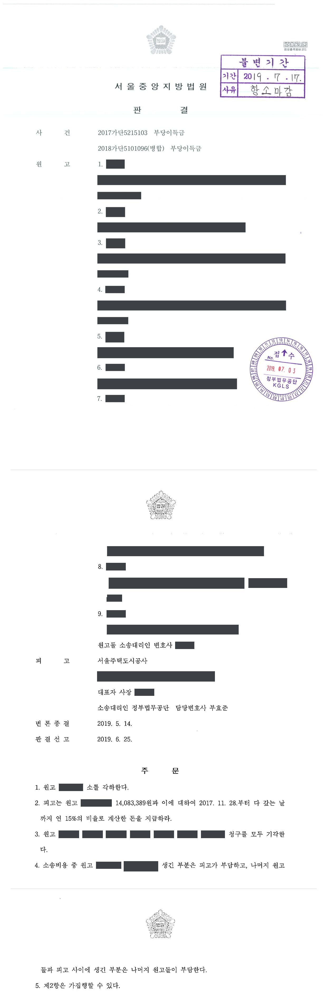
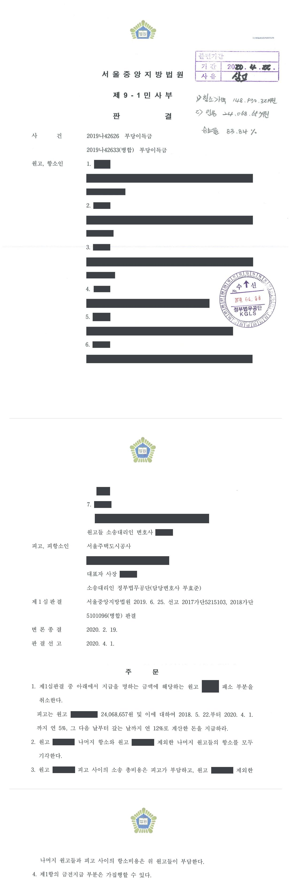

이주대책대상자 생활기본시설 설치비용 반환 청구소송 (1·2심)
서울중앙지방법원 2017가단5215103 · 서울중앙지방법원 2019나42626 · 담당변호사 부효준
판결문


사건의 요지
뉴타운 도시개발사업의 이주대책대상자들이 분양대금에 포함된 생활기본시설 설치비용의 반환을 구한 사건으로, 이주대책대상자 해당 여부와 반환 범위가 다투어졌습니다. 다수 원고의 청구는 받아들여지지 않고 일부 원고의 청구만 인용되었습니다.
사건의 주요 내용
한 뉴타운 도시개발사업의 사업시행자는 사업 시행으로 주택이 제공되어 생활의 근거를 잃게 되는 이주대책대상자들에게 구 공익사업법 제78조에 따른 이주대책의 하나로 사업지구 안에 신축한 아파트를 특별공급하였습니다. 그 분양대금에 사업시행자가 부담해야 할 생활기본시설 설치비용이 포함되어 있어 그 부분이 무효이고, 사업시행자가 대지면적 1㎡당 418,731원을 부당이득으로 반환해야 한다는 점은 이 사건에서 다툼이 없는 전제사실이었습니다.
특별공급 아파트의 수분양자 본인뿐 아니라 수분양자의 상속인, 분양계약상 지위나 반환채권을 넘겨받은 사람 등 9명이 2017년 사업시행자를 상대로 1인당 100만 원부터 약 2,870만 원까지 합계 약 1억 9,175만 원의 반환을 구하는 소를 제기하였습니다(두 사건이 병합되어 심리). 부효준 변호사는 피고 사업시행자를 대리하였습니다.
제1심(2019년 6월)은 같은 청구로 이미 승소 확정판결을 받은 원고 1명의 소를 각하하고, 원고 1명의 청구(14,083,389원)만 전부 받아들였으며, 나머지 7명의 청구는 이주대책대상자임을 증명하지 못하였다는 이유로 모두 받아들이지 않았습니다. 7명이 항소한 항소심(2020년 4월)은 그중 1명에 대하여만 24,068,657원의 지급을 명하고 나머지 6명의 항소를 받아들이지 않았습니다. 결국 원고 9명 가운데 2명만 각자의 2분의 1 지분에 해당하는 금액을 받게 되었습니다.
쟁점
- 수분양자의 상속인이나 분양권 양수인이 반환을 청구하는 경우 전 수분양자가 법령상 이주대책대상자였음을 어떻게 증명해야 하는지
- 분양계약상 지위를 사업시행자의 승낙을 얻어 제3자에게 포괄적으로 넘긴 수분양자에게 여전히 부당이득반환채권이 남아 있는지
- 분양계약상 지위의 2분의 1 지분을 양수한 배우자가, 양도인에 관한 확정판결에서 인정된 사실을 근거로 자기 지분에 해당하는 반환을 구할 수 있는지
원고의 주장
- 원고들은 사업시행자와 체결된 각 아파트 분양계약의 분양가격에 사업시행자가 부담해야 하는 생활기본시설 설치비용이 포함되어 있고, 이는 구 공익사업법 제78조 제4항에 위반되어 무효이므로 사업시행자가 그 상당액을 부당이득으로 반환해야 한다고 주장하였습니다.
- 수분양자 본인이 아닌 원고들은 수분양자인 부모나 배우자, 분양권 양도인 등으로부터 부당이득반환채권을 상속하거나 양수하였으므로 자신들이 그 반환을 구할 수 있다고 주장하였습니다.
부효준 변호사의 주장
- 부당이득반환청구권이 성립하려면 원고들 또는 그 전 수분양자가 법령상 이주대책대상자, 즉 이주대책기준일부터 종전 주택에 관한 계약체결일 또는 수용재결일까지 그 주택에 계속 거주한 소유자여야 하는데, 원고들 대부분이 이를 뒷받침하는 자료를 내지 않았다는 점을 다투었습니다. 제1심에서부터 여러 차례 원고들에게 종전 주택의 등기부등본, 협의계약서, 수용재결서 등 이주대책대상자인지 확인할 수 있는 서류의 제출을 요구하였습니다.
- 원고 가운데 1명은 같은 청구로 이미 승소 확정판결을 받았다는 점을 증거로 밝혀 그 소에 권리보호의 이익이 없음을 지적하였고, 분양계약상 지위를 사업시행자의 승낙을 얻어 제3자에게 넘긴 원고에게는 반환채권이 남아 있지 않다는 점도 다투었습니다.
법원의 판단
법원은 특별공급 아파트의 분양대금에 생활기본시설 설치비용을 포함시킨 부분이 무효이고 반환할 금액이 대지면적 1㎡당 418,731원이라는 점은 전제로 하면서도, 원고별로 전 수분양자가 이주대책대상자였는지를 따졌습니다. 분양계약서조차 내지 않은 원고, 수분양자인 어머니가 종전 주택의 소유자였는지와 거주관계를 보여 주는 주민등록표 초본조차 내지 않은 원고, 종전 주택의 등기부등본·협의계약서·수용재결서를 피고의 거듭된 요구에도 제출하지 않은 원고의 청구는 이주대책대상자임을 인정할 증거가 없다는 이유로 모두 받아들여지지 않았습니다.
최초 수분양자가 이주대책기준일(2004년 1월 15일) 뒤인 2005년 12월에야 사업구역 안으로 전입한 경우에는 그로부터 분양계약상 지위를 승계한 원고도 반환을 구할 수 없다고 하였습니다. 이주대책대상자로 보이는 원고라도 피고의 승낙을 얻어 분양계약 당사자 지위를 제3자에게 포괄적으로 넘겼다면 이미 발생한 부당이득반환채권도 함께 이전되었다고 보아(대법원 2011. 6. 23. 선고 2007다63089 판결) 청구를 받아들이지 않았고, 같은 청구로 승소 확정판결을 받은 원고의 소는 권리보호의 이익이 없어 각하되었습니다.
반면 두 원고의 청구는 받아들여졌습니다. 한 원고는 공동 수분양자(공유자)가 먼저 제기한 소송에서 '분양계약상 지위의 2분의 1을 원고에게 넘겼다'는 이유로 그 공유자에게 2분의 1만 인용된 판결이 확정되어 있었으므로, 나머지 2분의 1인 14,083,389원이 제1심에서 그대로 인용되었습니다.
다른 원고는 남편이 분양계약을 체결한 뒤 피고의 승낙을 얻어 지위의 2분의 1 지분을 넘겨받은 사람으로, 제1심은 증거가 부족하다고 보았으나 항소심은 남편이 이주대책대상자라는 점이 다툼 없는 사실로 정리된 확정판결(남편에게 2분의 1만 인용)을 유력한 증거로 삼아 24,068,657원과 소장 송달 다음날부터의 지연손해금 지급을 명하였습니다. 나머지 6명의 항소는 받아들여지지 않았습니다.
구 「공익사업을 위한 토지 등의 취득 및 보상에 관한 법률 시행령」(2008. 2. 29. 대통령령 제20722호로 개정되기 전의 것) 제40조 제3항의 내용과 이 사건 사업 시행 경과에 따르면, 기존 주택 소유자가 이주대책대상자에 해당하려면 2004. 1. 15.(이주대책기준일)부터 기존 주택에 관한 계약체결일 또는 수용재결일까지 당해 주택에 계속 거주하였어야 한다(다만 질병으로 인한 요양 등 부득이한 사유로 거주하지 아니한 경우는 예외로 한다).
서울중앙지방법원 2019나42626 판결 이유 '1. 다툼 없는 전제사실 다.'
그러나 망인 또는 그 아들이 위 기존 주택의 소유자라는 점 및 위 기존 주택에 관한 계약체결일 또는 수용재결일까지 거주하였다는 점을 인정하기에 충분한 증거가 없으므로, 이들이 이주대책대상자에 해당한다고 보기 어렵다(피고는 제1심에서부터 여러 차례 원고에게 망인 또는 그 아들이 이주대책대상자인지를 확인할 수 있는 서류 즉 기존 주택에 관한 등기부등본, 협의계약서나 수용재결서 등을 제출하라고 요구하였으나, 원고는 이를 제출하지 않았다).
서울중앙지방법원 2019나42626 판결 이유 '2. 다.'(상속·매매로 아파트를 넘겨받은 원고에 관한 판단)
민사재판에서 다른 민사사건 등의 판결에서 인정된 사실에 구속되는 것은 아니지만 이미 확정된 관련 민사사건에서 인정된 사실은 특별한 사정이 없는 한 유력한 증거가 된다. 위 확정판결의 효력이 원고에게 직접 미치는 것은 아니나, 원고의 남편의 거주지 및 거주기간, 위 항소심에서 피고가 취한 태도까지 모두 더하여 보면, 원고의 남편은 이주대책대상자에 해당하고 원고는 피고의 승낙을 얻어 분양계약상 당사자지위의 1/2 지분을 양수함으로써 그 지분에 해당하는 부당이득반환채권을 가진다고 봄이 타당하다.
서울중앙지방법원 2019나42626 판결 이유 '2. 사. 2)'(청구가 인용된 원고에 관한 판단)
※ 판결 이유 가운데 이 사건의 판단 기준이 된 부분을 그대로 옮긴 것으로, 당사자 이름 등은 가렸습니다.
이 사건이 보여 주는 것
이주대책대상자의 생활기본시설 설치비용 반환소송은 대지면적 1㎡당 반환 단가가 다른 판결로 이미 정해져 있어도, 원고 한 사람 한 사람이 법령상 이주대책대상자이거나 그로부터 적법하게 권리를 넘겨받은 사람인지를 따로 증명해야 합니다. 이 사건에서는 9명 가운데 7명이 종전 주택의 소유·거주 자료나 분양계약서를 내지 못하여 패소하였습니다. 수분양자가 사망하였거나 분양권이 여러 번 넘어간 경우에는 최초 수분양자의 거주 사실부터 양도·상속의 연결고리까지 서류로 갖추어야 합니다.
사업시행자 측에서는 원고별로 전소 확정판결, 분양계약상 지위 양도, 이주대책기준일 이후 전입 여부를 확인하여 다투는 것이 책임 범위를 가르는 핵심이었습니다. 반대로 공동 수분양자에 관한 확정판결에서 이주대책대상자임이 다툼 없는 사실로 정리된 경우에는 그 판결이 유력한 증거가 되어 나머지 지분권자의 청구가 인용될 수 있다는 점도 확인되었습니다.
관련 법령구 공익사업을 위한 토지 등의 취득 및 보상에 관한 법률(2007. 10. 17. 법률 제8665호로 개정되기 전의 것) 제78조 · 구 공익사업법 시행령(2008. 2. 29. 대통령령 제20722호로 개정되기 전의 것) 제40조 제3항 · 소송촉진 등에 관한 특례법(지연손해금)
관련 단어이주대책대상자생활기본시설 설치비용부당이득반환특별공급 아파트뉴타운 도시개발사업이주대책기준일거주요건 증명분양계약 지위 양도상속인 청구확정판결의 증명력권리보호의 이익사업시행자 대리
비슷한 처분을 받으셨다면
행정처분은 처분이 있음을 안 날부터 90일 이내에 행정심판이나 취소소송으로 다투어야 하고, 기간이 지나면 돌이킬 수 없는 처분은 집행정지를 서둘러야 합니다. 처분서를 받은 날짜부터 확인해 드립니다.